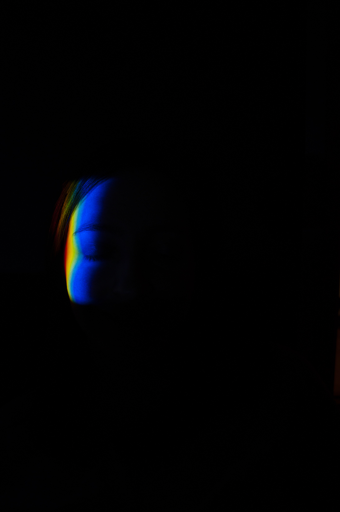

See you on the dark side of the moon
The series was made with the help of a prism and ruthless physics. Self-portraiting for me sometimes is a kind of a game, sometimes is a sort of self-therapy. This series was both. I just found a prism and it was an echo of a childhood experience when a rainbow was a miracle. And in my almost 29 it was a miracle again to create a rainbow by myself and totally control the process. The therapy part was about finding something bright in a dark period of my life.
February 2019
